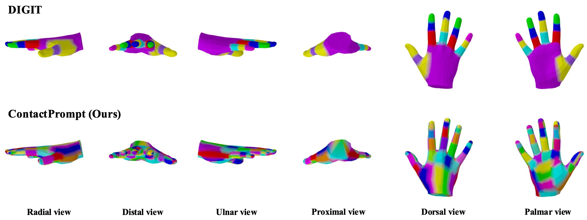
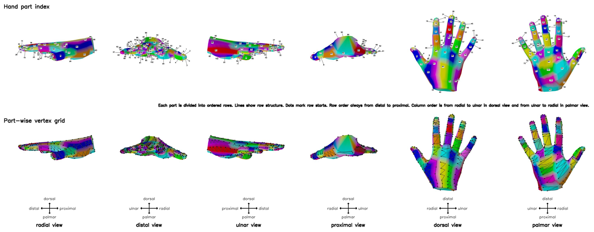
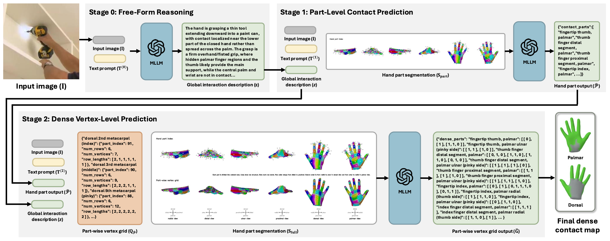
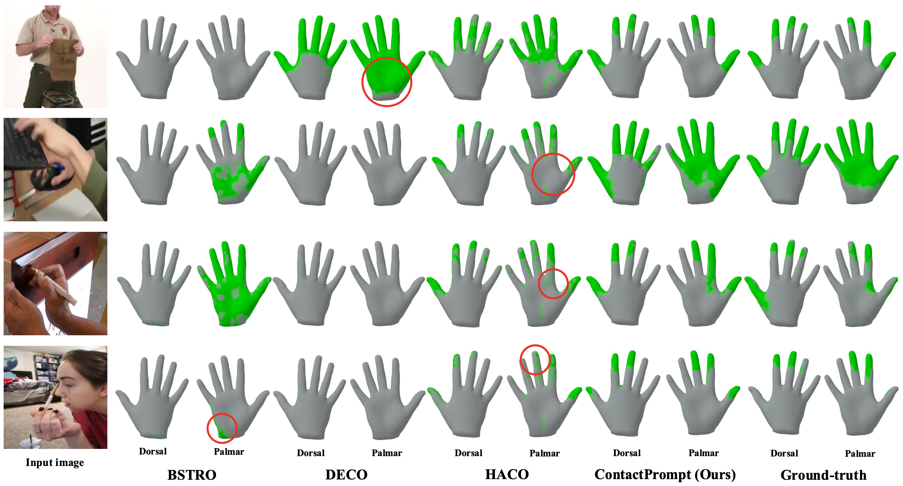

Dense hand contact estimation requires both high-level semantic understanding and fine-grained geometric reasoning of human interaction to accurately localize contact regions. Recently, multi-modal large language models (MLLMs) have demonstrated strong capabilities in understanding visual semantics, enabled by vision–language priors learned from large-scale data. However, leveraging MLLMs for dense hand contact estimation remains underexplored. There are two major challenges in applying MLLMs to dense hand contact estimation. First, encoding explicit 3D hand geometry is difficult, as MLLMs primarily operate on vision and language modalities. Second, capturing fine-grained vertex-level contact remains challenging, as MLLMs tend to focus on high-level semantics rather than detailed geometric reasoning. To address these challenges, we propose ContactPrompt, a training-free and zero-shot approach for dense hand contact estimation using MLLMs. To effectively encode 3D hand geometry, we introduce a detailed hand-part segmentation and a part-wise vertex-grid representation that provides structured, localized geometric information. To enable accurate and efficient dense contact prediction, we develop a multi-stage structured contact reasoning with part conditioning, progressively bridging global semantics and fine-grained geometry. Therefore, our method effectively leverages the reasoning capabilities of MLLMs while enabling precise dense hand contact estimation. Surprisingly, the proposed approach outperforms previous supervised methods trained on large-scale dense contact datasets without requiring any training. The codes will be released.
Our ContactPrompt provides more detailed hand part segmentation that is aligned with the function of hand parts.

The visual prompt consists of hand part indices and part-wise vertex grids. Hand part indices associate each region with its numeric label. The vertex grid shows row structure, where each row starts with a dot, vertices are connected by lines, and consecutive rows are linked to indicate sequential ordering between rows of the grid.

Given an input image and text prompt, we first perform free-form reasoning with MLLMs to produce global interaction description. Next, part-level contact prediction is performed using the input image, global interaction description, text prompt, and hand part segmentation to obtain predicted contact parts. Moreover, dense vertex-level contact is estimated by providing the input image, text prompt, predicted contact part, full visual prompt, and part-wise vertex grid specification, producing part-wise grid outputs. Lastly, the output is mapped to final dense hand contact map.


There's a lot of excellent works that we wish to share.
3DAxisPrompt: Promoting the 3D grounding and reasoning in GPT-4o.
Shoe Style-Invariant and Ground-Aware Learning for Dense Foot Contact Estimation.
Learning Dense Hand Contact Estimation from Imbalanced Data.
Joint Reconstruction of 3D Human and Object via Contact-Based Refinement Transformer.
@article{jung2026contactprompt,
title={Training-Free Dense Hand Contact Estimation with Multi-Modal Large Language Models},
author={Jung, Daniel Sungho and Lee, Kyoung Mu},
journal={arXiv preprint arXiv:2605.05886},
year={2026}
}